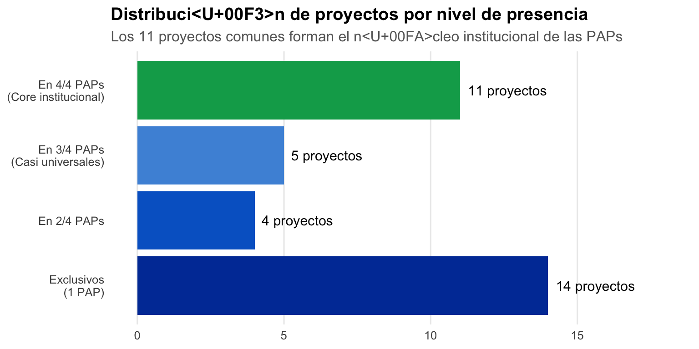
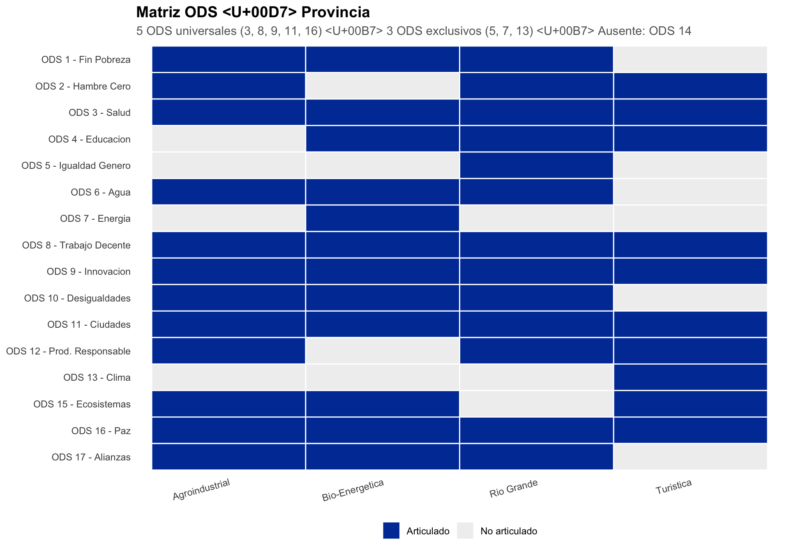
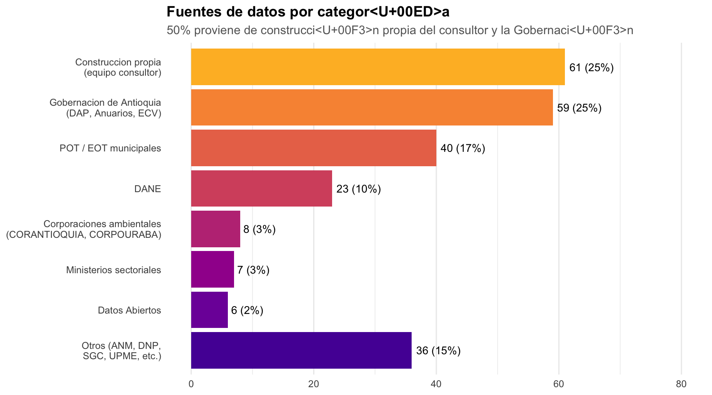

| Indicador | Agroindustrial | Bio-Energetica | Rio Grande | Turistica | Total |
|---|---|---|---|---|---|
| Subregion | Occidente | Norte | Norte | Occidente | 2 |
| Municipios | 6 | ~11 | 6 | 9 | ~32 |
| Hechos Provinciales | 4 | 3 | 4 | 4 | 15 |
| Ejes Estrategicos | 6 | 4 | 5 | 6 | 21 |
| Programas | 10 | 6 | 8 | 8 | 32 |
| Proyectos | 22 | 22 | 22 | 24 | 90 |
| ODS articulados | 13 | 12 | 13 | 12 | 16 unicos |
| Refs. bibliograficas | 19 | 58 | 23 | 24 | ~93 unicas |
| Fuentes de datos | 108 | 94 | 120 | 123 | 240 unicas |
Análisis Comparativo de PEPs
4 Planes Estratégicos Provinciales: convergencias, divergencias y brechas
Panel de Métricas
Visiones Comparadas
| Concepto | Agroindustrial | Bio-Energetica | Rio Grande | Turistica |
|---|---|---|---|---|
| Horizonte 2035 | X | X | X | X |
| Territorio ordenado | – | X | X | X |
| Sostenibilidad ambiental | X | X | X | X |
| Calidad de vida | X | X | X | – |
| Innovacion / tecnologia | X | X | – | – |
| Conectividad | X | X | – | X |
| Seguridad | – | X | X | X |
| Equidad | – | – | X | X |
| Referencia a rio/cuenca | – | – | X | X |
| Patrimonio cultural | X | – | – | X |
| Agroindustria | X | – | X | – |
| Turismo | – | – | X | X |
| Energia | – | X | – | – |
Convergencias: Todas comparten horizonte 2035, sostenibilidad ambiental y vocación económica diferenciada. Divergencias: Solo 2/4 mencionan innovación; solo 2/4 mencionan equidad explícitamente; la referencia a ríos/cuencas es exclusiva de Río Grande y Turística.
Arquitectura Estratégica Comparada
Temas Transversales
Los 6 temas transversales identificados cruzan las 4 PAPs con diferente ubicación en la estructura de hechos provinciales:
| Tema transversal | Agroindustrial | Bio-Energetica | Rio Grande | Turistica |
|---|---|---|---|---|
| OT y Medio Ambiente | HP3 (Eje 5) | HP1 (Eje 1) | HP1 (Ejes 1-2) | HP1 (Ejes 1-2) |
| Desarrollo Econ<U+00F3>mico | HP1 (Eje 1) | HP2 (Eje 2) | HP2 (Eje 3) | HP3 (Eje 4) |
| Seguridad y Convivencia | HP2 (Eje 2) | HP3 (Eje 4) | HP4 (Eje 5) | HP4 (Eje 6) |
| Equidad Social | HP2 (Eje 3) | HP3 (Ejes 3-4) | HP3 (Eje 4) | HP4 (Eje 6) |
| Conectividad e Infraestructura | HP3 (Eje 4) | HP3 (Eje 3) | HP2 (Eje 3) | HP4 (Eje 5) |
| Capacidad Institucional | HP3 (Eje 5) | HP1 (Eje 1) | HP1 (Eje 2) | HP1 (Eje 2) |
Proyectos Comunes vs. Exclusivos
Proyectos en 4/4 PAPs (Core Institucional)
| Proyecto | Categoria |
|---|---|
| Banco de Proyectos Provincial | Capacidad Institucional |
| Sistema de Informaci<U+00F3>n Provincial | Capacidad Institucional |
| Habilitaci<U+00F3>n como Gestor Catastral | Capacidad Institucional |
| Fortalecimiento gesti<U+00F3>n fiscal y financiera | Capacidad Institucional |
| Actualizaci<U+00F3>n EOT / PBOT | Ordenamiento Territorial |
| Pago por Servicios Ambientales (PSA) | Ordenamiento Territorial |
| PPISCC | Seguridad |
| Centro Provincial de Monitoreo y Control | Seguridad |
| Escuadr<U+00F3>n EMP<U+00C1>S | Seguridad |
| Plan Vial Provincial | Conectividad |
| Gesti<U+00F3>n integral residuos s<U+00F3>lidos | Servicios P<U+00FA>blicos |
Proyectos en 3/4 PAPs
| Proyecto | AGRO | BIO | RIO | TUR | Ausente |
|---|---|---|---|---|---|
| Ampliaci<U+00F3>n cobertura internet | X | X | <U+2014> | X | R<U+00ED>o Grande |
| Agua potable y saneamiento | X | X | X | <U+2014> | Tur<U+00ED>stica |
| Habilitaci<U+00F3>n como EPSEA | X | X | <U+2014> | X | R<U+00ED>o Grande |
| Red Provincial de Salud | X | <U+2014> | X | X | Bio-Energ<U+00E9>tica |
| Articulaci<U+00F3>n Plan Embalse Hidroituango | X | X | <U+2014> | X | R<U+00ED>o Grande |
Proyectos Exclusivos (Diferenciadores)
| PAP | Proyecto | Relevancia |
|---|---|---|
| Agroindustrial | Centro de Formaci<U+00F3>n Agroindustria Sostenible | Formaci<U+00F3>n especializada en cadenas productivas |
| Agroindustrial | Hospital de segundo nivel de complejidad | <U+00DA>nico PEP con inversi<U+00F3>n en infraestructura de salud |
| Agroindustrial | Lineamientos OT corredor interoce<U+00E1>nico | Desarrollo log<U+00ED>stico Buenaventura-Urab<U+00E1> |
| Bio-Energ<U+00E9>tica | Comit<U+00E9> articulador aprovechamiento embalses | Identidad energ<U+00E9>tica |
| Bio-Energ<U+00E9>tica | Formalizaci<U+00F3>n producci<U+00F3>n minera | Miner<U+00ED>a como sector productivo |
| Bio-Energ<U+00E9>tica | Ordenamiento social de la propiedad | Post-conflicto y justicia transicional |
| Bio-Energ<U+00E9>tica | Red Provincial de Seguridad | Adicional al PPISCC y EMP<U+00C1>S |
| R<U+00ED>o Grande | Articulaci<U+00F3>n con POMCA R<U+00ED>o Grande | Ordenaci<U+00F3>n de cuenca hidrogr<U+00E1>fica |
| R<U+00ED>o Grande | Paneles solares para unidades lecheras | Energ<U+00ED>a renovable aplicada a agroindustria |
| R<U+00ED>o Grande | Cl<U+00FA>ster industria confecciones | Don Mat<U+00ED>as como polo textil |
| R<U+00ED>o Grande | Centro de Emprendimiento e Innovaci<U+00F3>n | Ecosistema de apoyo empresarial |
| Tur<U+00ED>stica | Marca Provincial | Branding territorial |
| Tur<U+00ED>stica | Navegabilidad del R<U+00ED>o Cauca | Transporte fluvial |
| Tur<U+00ED>stica | Sistemas agroforestales y silvopastoriles | Enfoque agroecol<U+00F3>gico |
Distribución de Proyectos

Clasificación de Problemas
| Problema | PAPs afectadas | Tipo de interconexion | Proyecto asociado |
|---|---|---|---|
| Impacto Hidroituango | AGRO, BIO, TUR | Ambiental, social y economico: afecta cuencas, desplazamiento, oportunidades energeticas | Articulacion Plan Embalse |
| Conectividad vial deficiente | 4/4 | Cadenas productivas dependen de vias intermunicipales; turismo requiere accesibilidad | Plan Vial Provincial |
| Gestion de cuencas hidricas | RIO, BIO | Ecosistemas compartidos: POMCA Rio Grande, embalses en Bio-Energetica | Articulacion POMCA / PSA |
| Cadenas productivas intermunicipales | AGRO, RIO | Agroindustria lactea y agricola cruzan fronteras municipales | Habilitacion EPSEA |
| Corredor turistico integrado | TUR, RIO | Turistas recorren multiples municipios: requiere marca y gestion conjunta | Red Provincial Turismo |
| Gestion de residuos solidos | 4/4 | Cuencas compartidas: contaminacion en un municipio afecta a vecinos | Parque Provincial Residuos |
| Seguridad en corredores | 4/4 | Crimen organizado opera a escala supramunicipal | PPISCC + Centro Monitoreo |
| Problema | Prevalencia | Causa similar | Proyecto asociado |
|---|---|---|---|
| EOTs desactualizados | 4/4 PAPs | Instrumentos de OT vencidos o nunca actualizados en municipios cat. 5-6 | Actualizacion EOT/PBOT |
| Baja capacidad fiscal municipal | 4/4 PAPs | Municipios cat. 6a con baja base tributaria y dependencia de transferencias | Fortalecimiento gestion fiscal |
| Deficit conectividad digital | 4/4 PAPs | Baja cobertura de internet rural: mismas limitaciones de infraestructura | Ampliacion cobertura internet |
| Deficit servicios de salud | 4/4 PAPs | Hospitales de primer nivel insuficientes, sin especialistas | Red Provincial de Salud |
| Inseguridad y violencia | 4/4 PAPs | Presencia de grupos armados, economias ilegales: patron departamental | PPISCC + EMPAS |
| Baja formalizacion empresarial | 3/4 PAPs | Informalidad economica estructural en zonas rurales | Formalizacion empresarial |
| Catastro desactualizado | 4/4 PAPs | Rezago catastral generalizado en Antioquia: 60%+ predios rurales informales | Habilitacion Gestor Catastral |
| Problema | PAP | Municipio(s) | Por que excede capacidad |
|---|---|---|---|
| Mineria ilegal de oro | Turistica / Bio-Energetica | Buritica, Ituango, Briceno | Requiere coordinacion con fuerza publica nacional, ANM, justicia |
| Justicia transicional | Bio-Energetica | Ituango | Masacres historicas, victimas, restitucion: excede jurisdiccion municipal |
| Patrimonio colonial | Turistica | Santa Fe de Antioquia | Gestion de patrimonio nacional requiere MinCultura + recursos especializados |
| Cluster textil | Rio Grande | Don Matias | Competitividad industrial requiere politica de cluster supramunicipal |
| Paramos y ecosistemas de alta montana | Rio Grande | Belmira | Conservacion requiere coordinacion con CORANTIOQUIA y nivel nacional |
| Turismo masivo | Turistica | San Jeronimo, Sopetran | Capacidad de carga excedida: requiere regulacion supramunicipal |
| Corredor interoceanico | Agroindustrial | Dabeiba, Canasgordas | Infraestructura nacional que excede competencia municipal |
| Comunidades indigenas | Agroindustrial | Frontino, Dabeiba | Gobernanza etnica con jurisdiccion especial |
Matriz ODS

Fuentes de Financiación
| Fuente | Tipo | AGRO | BIO | RIO | TUR |
|---|---|---|---|---|---|
| Gobernacion de Antioquia | Departamental | X | X | X | X |
| Provincia (recursos propios) | Provincial | X | X | X | X |
| Municipios | Municipal | X | X | X | X |
| CORANTIOQUIA / CORPOURABA | Ambiental | X | X | X | X |
| Ministerios sectoriales | Nacional | X | X | X | X |
| SGR (Regalias) | Nacional | – | X | X | X |
| FONTUR | Nacional-Turismo | X | – | X | X |
| SENA | Nacional-Formacion | X | X | X | – |
| Camara de Comercio | Privado | – | – | X | X |
| Sector privado | Privado | – | – | – | X |
| Hidroituango | Especial | X | X | – | X |
Ecosistema de Datos
| Metrica | Valor |
|---|---|
| Total de referencias a fuentes en los 4 PEPs | 445 |
| Fuentes unicas (deduplicadas) | 240 |
| Compartidas por 4/4 PAPs | 27 (nucleo informacional comun) |
| Compartidas por 3 PAPs | 24 |
| Compartidas por 2 PAPs | 35 |
| Exclusivas de 1 PAP | 154 (64%) |

Brechas Transversales
Conexión con la Propuesta CVP-EAFIT
Referencias
Bardhan, P. (2002). Decentralization of Governance and Development. Journal of Economic Perspectives, 16(4), 185-205. https://doi.org/10.1257/089533002320951037
Bel, G., & Warner, M. E. (2015). Inter-Municipal Cooperation and Costs: Expectations and Evidence. Public Administration, 93(1), 52-67. https://doi.org/10.1111/padm.12104
Bel, G., & Warner, M. E. (2016). Factors Explaining Inter-Municipal Cooperation in Service Delivery: A Meta-Regression Analysis. Journal of Economic Policy Reform, 19(2), 91-115. https://doi.org/10.1080/17487870.2015.1100084
Departamento Nacional de Planeación (DNP). (2019). Catastro Multipropósito Para La Planeación y Gestión Territorial. DNP.
Feiock, R. C. (2013). The Institutional Collective Action Framework. Policy Studies Journal, 41(3), 397-425. https://doi.org/10.1111/psj.12023
Majerowicz Nieto, S., & Guzmán Botero, A. (2025). ¿Cómo Evaluar La Asociatividad Territorial? Metodología de Análisis Costo-Beneficio Aplicada a Esquemas Asociativos Territoriales (EAT) En Colombia. En P. Sanabria Pulido (Ed.), Asociatividad Territorial, Gobernanza Multinivel y Descentralización (pp. 303-345). Universidad de los Andes.
OECD. (2019). Making Decentralisation Work: A Handbook for Policy-Makers. OECD Publishing. https://doi.org/10.1787/g2g9faa7-en
OECD. (2022). Regional Governance in OECD Countries: Trends, Typology and Tools. OECD Publishing. https://doi.org/10.1787/4d7c6483-en
Sanabria Pulido, P., Rodríguez Caporalli, E., & Leyva Botero, S. (2025). Asociatividad Territorial, Gobernanza Multinivel y Descentralización: Avances y Lecciones de Los Esquemas Asociativos Territoriales En Colombia. Universidad Icesi. https://doi.org/10.18046/EUI/escr.26.2025
World Bank. (2019). Colombia Multipurpose Cadastre Project: Project Appraisal Document. World Bank.